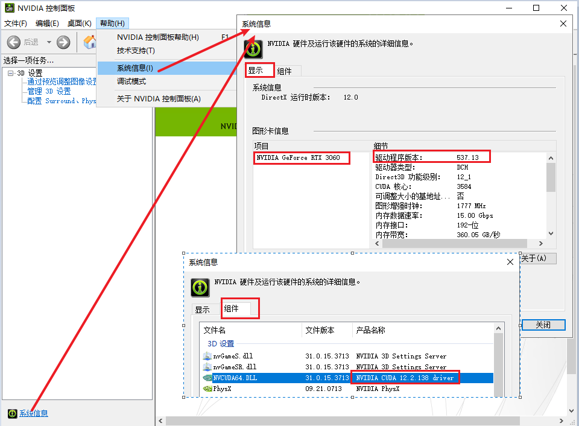
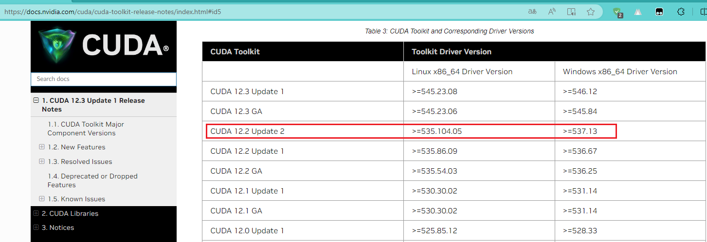

在接触大语言模型的时候，除了他本身，还有许多其他的……
git lfs install
# 进入魔搭社区的某个项目之后，相对路径地址可以拷贝
git clone https://modelscope.cn/ZhipuAI/chatglm2-6b.git
git clone https://modelscope.cn/ZhipuAI/chatglm3-6b.git
git clone https://modelscope.cn/ZhipuAI/codegeex2-6b.git
git clone https://modelscope.cn/baichuan-inc/Baichuan2-7B-Chat.git
git clone https://modelscope.cn/qwen/Qwen-7B-Chat.git
git clone https://modelscope.cn/01ai/Yi-6B-Chat.git
git clone https://modelscope.cn/WisdomShell/CodeShell-7B-Chat.git
魔搭社区没有的只能依靠他了
还有可以在官网下载的
要想安装

嗯，有了这个之后我们就可以去下载
😵😵😵，感觉这里是按照 Driver Version 对应 CUDA 版本的，并且还有兼容模式……暂时按照不兼容的选吧。如下：Table 3:CUDA Toolkit and Corresponding Driver Versions

官网：CUDA Toolkit - Free Tools and Training | NVIDIA Developer、CUDA Toolkit Archive | NVIDIA Developer
官网：CUDA Deep Neural Network (cuDNN) | NVIDIA Developer
对于
官网：pip · PyPI
别人安装速度怎么样？咱不知道。反正我这里的速度那是龟速啊！咱们国人也真够苦逼的，弄各种各种的镜像……
你可以参照这篇： pypi | 镜像站使用帮助 | 清华大学开源软件镜像站 | Tsinghua Open Source Mirror，看看如何设置国内镜像源。
# 安装依赖（使用最初设置的镜像源或者使用已经修改的全局镜像源）
pip install -r requirements.txt
# 仅本次安装时使用指定镜像源
pip install -r requirements.txt -i https://pypi.tuna.tsinghua.edu.cn/simple
官网：GitHub - conda/conda 、Conda — conda documentation
Conda 是一个开源的包管理系统和环境 在 Windows、macOS 和 Linux 上运行的管理系统。注：翻译的。你也可以看看维基百科是如果解释的：Conda - 维基百科，自由的百科全书
工具软件： :: Anaconda.org、Miniconda — miniconda documentation
设置镜像： Anaconda | Miniconda 镜像使用帮助
你可以看看这篇文章：深度解析：Anaconda与Miniconda之间的选择 - 知乎
这个使用起来比较方便，如果你现在安装Python，venv已经默认安装了。
# 创建虚拟环境
python -m venv venv
# 激活虚拟环境
.\venv\scripts\activate
# 退出虚拟环境
deactivate
官网介绍：PyTorch is an optimized tensor library for deep learning using GPUs and CPUs.
安装最新版本：Start Locally | PyTorch
安装以前版本：Previous PyTorch Versions | PyTorch